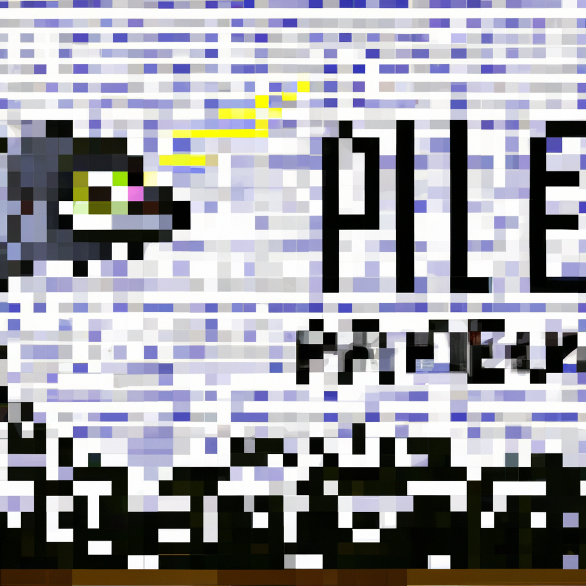

The Future of Python and AI
With the advent of AI, Python has become increasingly popular for coding and machine learning. This language is powerful and versatile, allowing developers to create complex and sophisticated applications. AI technologies are now being used in a wide range of industries, from medical and finance to manufacturing and transportation. Python is a great choice for coding these applications, as it is easy to learn and has a wide range of libraries for use.
The future of AI and Python looks incredibly promising. Python is already being used to create a variety of AI applications, such as facial recognition, natural language processing, and autonomous vehicles. These types of applications are only going to become more popular as the technology advances and more people become familiar with coding.
AI is also being used to create smarter and more efficient applications. For example, AI-powered search engines are being developed that can provide more accurate results, and AI-powered chatbots can help customers find answers to their questions faster.
Python is also being used to create powerful data analysis applications, such as machine learning models. These models can be used to predict customer behavior, identify patterns in data, and create insights from large datasets. This type of application is becoming increasingly popular, and Python is the perfect language for it.
Overall, Python and AI are becoming increasingly intertwined. As AI continues to gain momentum, Python will remain a popular choice for coding and machine learning applications. With its wide range of libraries and easy-to-learn syntax, Python is a great choice for anyone interested in coding and creating AI-powered applications.